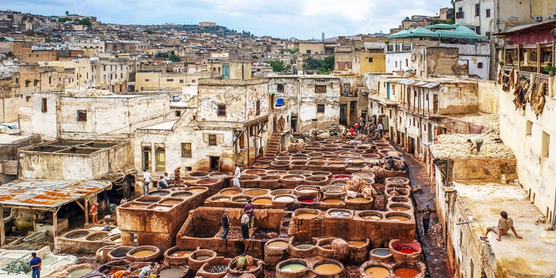
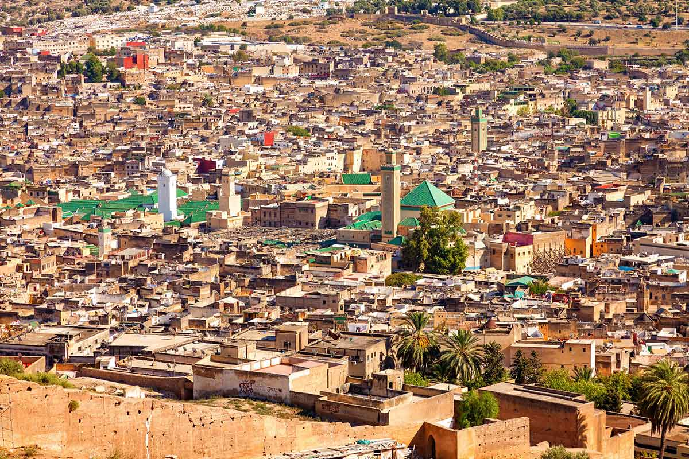
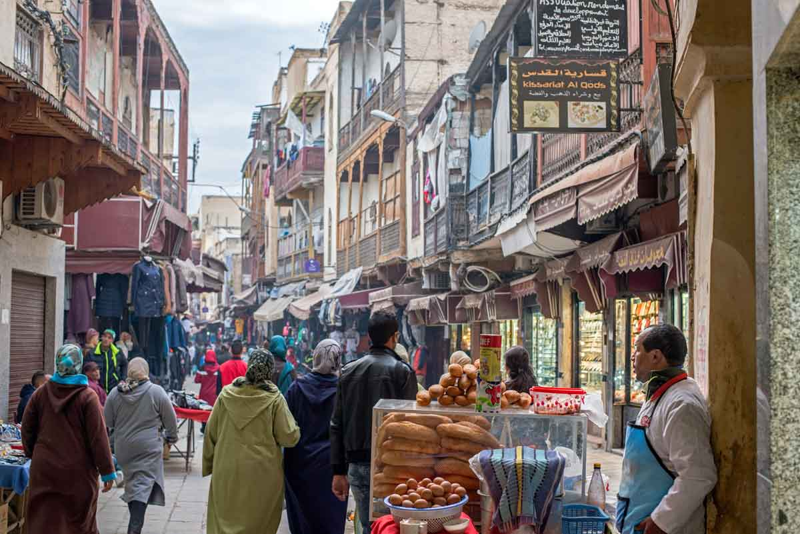
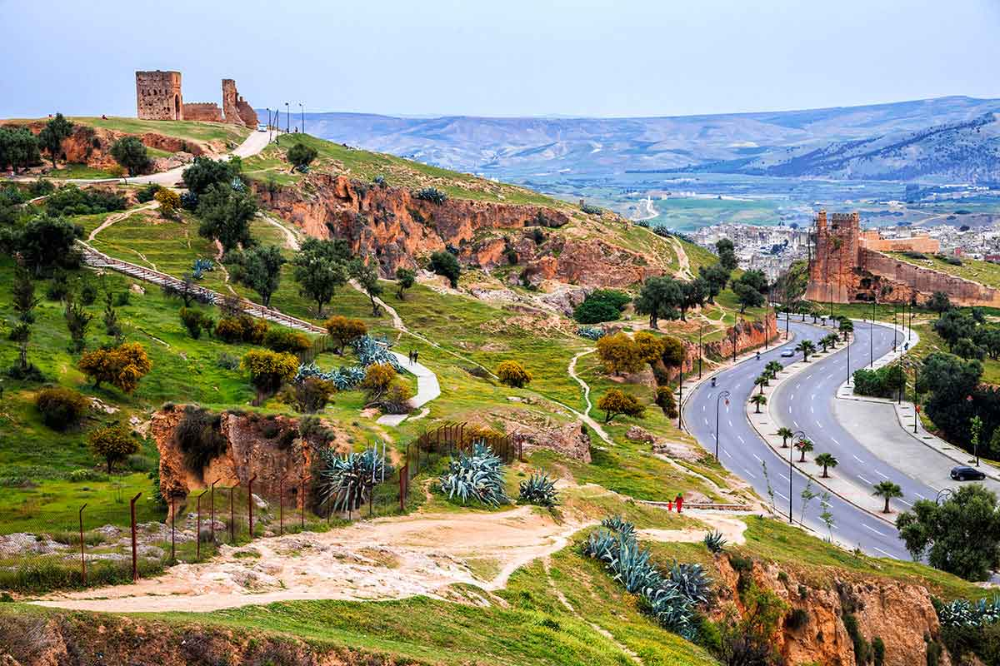

¡SaharaToursGo!
¡SaharaToursGo!
FEZ(MARRUECOS)
Es la tercera ciudad de Marruecos, después de Casablanca y Rabat, con una población de 1 968 150 habitantes según el censo de 2010 (gentilicio: fasi, fasí o fecí). Es la capital del islam en Marruecos, de la región de Fez-Bulmán y de la prefectura de Fez. Está situada en la región antiguamente llamada Hispania Nova.
Es una de las cuatro ciudades llamadas imperiales junto a Marrakech, Mequinez y Rabat. En Marruecos está considerada como el centro religioso y cultural del país. Su universidad, famosa por el estudio del árabe y la religión musulmana, la convierte en punto de paso de un gran número de estudiantes marroquíes.
La ciudad se divide en tres zonas, Fès el-Bali, la zona antigua, dentro de las murallas, Fès el-Jdid, la zona nueva, donde se encuentra la Mellah, el barrio judío, y la Ville Nouvelle (Ciudad Nueva), la zona más amplia, creada durante la colonia francesa, en el sur de la ciudad. La medina de Fez el-Bali, la mayor de las dos de la ciudad, es la mayor zona peatonal del mundo, y fue declarada Patrimonio de la Humanidad por la Unesco en 1981. La ciudad cuenta con el aeropuerto Saïss.
FEZ EL BALI
Ciudad Morisca del siglo IX que es una gran medina compuesta por más de 9.000 callejuelas y tiene el lujo de ser la mejor conservada del mundo árabe y, por qué no, el mayor monumento vivo de todo Marruecos. La extensa y laberíntica medina de Fes el-Bali, dicho sea de paso, también destaca por ser la zona urbana más grande del mundo sin tráfico de coches. El transporte de mercancías es se realiza en burros, carruajes y motos. Son callejuelas donde parece haberse perdido el tiempo
La medina de Fez el Bali es un gigantesco entramado de estrechas calles que pierden en todas las direcciones. Por su complejidad, es realmente difícil orientarse, incluso para los más experimentados en Marruecos. Para la visita de la medina de Fez debéis plantearos la posibilidad de contratar una guía oficial que os muestre y explique todos sus secretos
FEZ EL JEDID
Creada en el siglo XIII por los meriníes, se convirtió rápidamente en la sede del poder real. Esta parte de la ciudad esconde una densa trama urbana donde se ubican el barrio judío (Mellah) y el Palacio Real, además de animados zocos y tiendas de artesanía. Lo más destacado aquí es visitar el Palacio Real (solo por fuera, ya que está prohibido entrar) y recorrer las callejuelas de la judería, visitar su sinagoga y el cementerio judío. Merece la pena visitar la judería porque tiene un estilo arquitectónico diferente al resto de la ciudad.
¿QUE VER EN FEZ?
La Medina de Fez el-Bali (o antiguo Fes), como hemos dicho antes, es uno de los mayores emplazamientos medievales que existen en el mundo, un lugar mágico lleno de vida. De entre los monumentos que ver en Fez, ocupan un lugar muy destacado las mezquitas Karaouine y de los Andaluces, construidas, según la leyenda, por dos herederas de un kairuaní exiliado en el siglo IX. Las puertas y murallas que las rodean potencian su magnificencia, Patrimonio de la Humanidad por la UNESCO.
A diferencia de muchas poblaciones fortificadas de su época, Fez no ha modificado sus límites originarios. Sus habitantes se han expandido hacia el suroeste y las laderas, formando un arco que se dibuja de norte a sur de la zona nueva. La mejor manera de descubrir la medina de Fes es contratando un guía que os enseñe sus secretos y maravillas. El precio de un guía por un día entero es de 250 dh aproximadamente.
